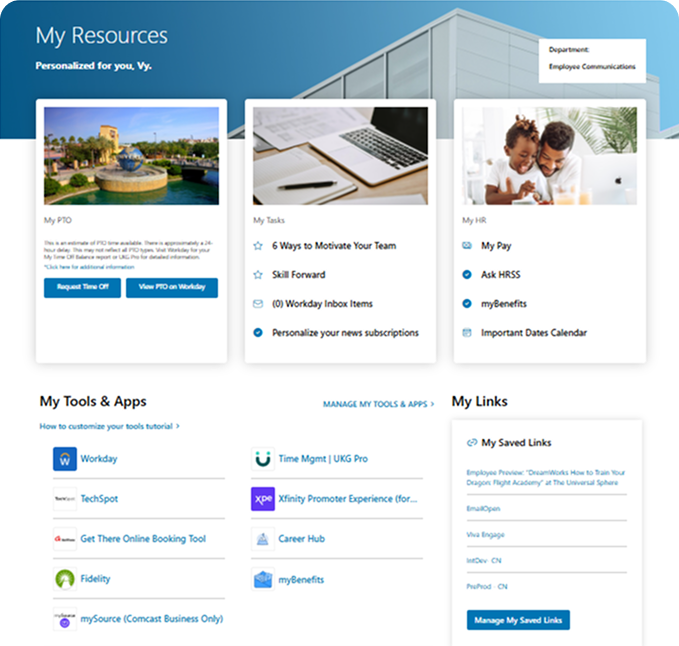
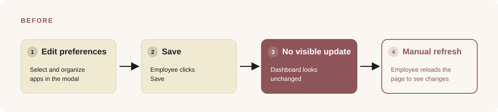
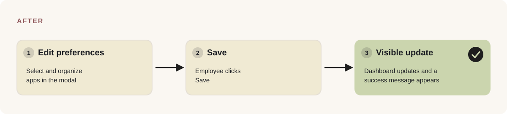
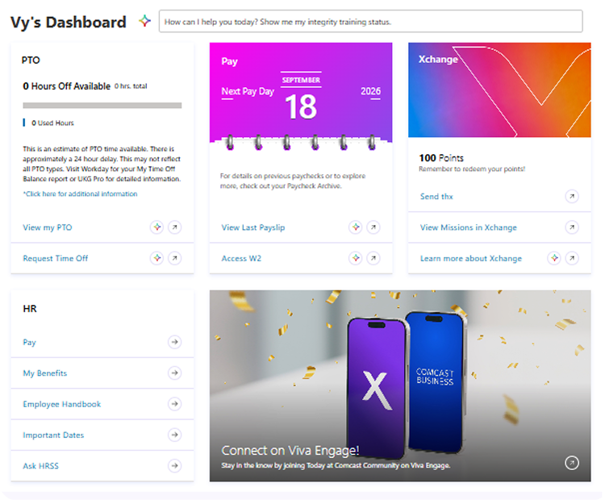

Overview
Skills: UX Design, UX Research
Timeline: 6 months
Bringing everyday resources into one place.
During my six-month co-op on Comcast’s Digital Internal Communications team, I helped test and refine a personalized employee dashboard designed to bring frequently used tools and resources into one place.
ComcastNow is an internal platform that connects more than 80,000 employees across Comcast with company news, tools, and resources. The dashboard refresh aimed to bring everyday information and actions into one personalized space, making it easier to check PTO, find the next pay date, and open frequently used apps.
Working between design and development, I explored edge cases, wrote user stories, tested employee and editor workflows, and collaborated with developers to resolve usability issues before launch.
The project at a glance...
80,000+Employees across Comcast
~90–100Issues designated must-fix for launch
The Challenge
Important information lived in too many places.
The original “My Resources” page provided employee information through three cards: My PTO, My Tasks, and My HR. Meanwhile, frequently used applications lived separately under Tools & Apps.
Although these resources were available, employees had to navigate between different areas of ComcastNow to find what they needed. The My Resources page also saw limited use.

The refresh focused on two goals:
- Make essentials easier to find. Bring everyday information like PTO balances, pay dates, and HR resources into a single, scannable dashboard.
- Support individual workflows. Give employees more control over their quick actions, applications, and saved links based on how they work.
Design & Refinement
A more personalized starting point
The design team organized the refreshed dashboard around four main features:
01Dashboard Cards
Display essential employee information, including PTO balances, pay dates, Xchange points, HR resources, and promotions.
02Quick Actions & Apps
Allow employees to select up to 10 frequently used applications and actions for their homepage.
03Saved Links
Give employees a place to add, edit, and organize useful links into folders.
04Personalized Header
Greet employees by name and provide quick access to Comcast’s AI assistant.
Looking beyond the intended experience
Beyond the main features, I worked with designers and developers to address smaller interaction gaps that could disrupt everyday tasks:
Recognizing tools
Revealing full application names on hover when labels were truncated.
Clarifying navigation
Distinguishing internal and external links through consistent indicators.
Managing saved resources
Bringing newly created folders into view so employees could immediately locate them.
Testing & Developer Collaboration
When saving doesn’t feel like saving
The dashboard design can look complete in Figma, but that doesn’t mean every interaction works as intended. I focused on testing employee-facing features and editor workflows, comparing development builds against Figma and exploring edge cases across personalization, navigation, and content management.
The problem
One issue I encountered involved the Quick Actions & Apps customization experience.
Employees could select and organize their preferred applications in a modal, but after clicking Save, their updated changes wouldn’t appear on the dashboard until they manually refreshed the page.
Although the changes were being saved, the interface provided no clear indication that the action had succeeded.
For a dashboard built around personalization, this created an important usability gap: employees had control over their preferences but couldn’t immediately tell whether their changes worked.

Turning a defect into a design improvement
After identifying the issue, I worked with my team to revisit the interaction and define what employees should experience after saving.
We focused on three improvements:
- Immediate updates: Reflect saved preferences on the dashboard without requiring a manual refresh.
- Success feedback: Clearly communicate when changes have been saved.
- Error feedback: Let employees know when something goes wrong instead of leaving them guessing.
These decisions were then handed off to developers and discussed in team meetings to align the intended experience with implementation.
What began as a functional defect revealed something missing from the design itself: personalization needs clear feedback to feel reliable.

Beyond customization
Similar issues appeared in other parts of the dashboard, raising concerns about the reliability of employee information.
Personalized Header
The greeting sometimes displayed only an employee’s last name instead of their intended personalized greeting.
PTO Card
Employee PTO information occasionally appeared incorrectly or failed to render.
Together, these issues raised a larger question: Can employees trust the dashboard to accurately reflect their actions and information?
Outcome
A more connected employee experience.
The refreshed dashboard brought frequently used employee resources into one centralized, customizable experience.
Instead of navigating between separate areas for employee information and applications, employees could access essential resources, personalize their quick actions, and organize saved links from a single starting point.
My work helped bridge the gap between the intended design and the experience being built. By identifying usability issues, helping define missing interactions, and collaborating with developers, I contributed to improving the dashboard’s reliability and preparing it for launch.
Across testing, I documented 120+ defects, with approximately 90–100 designated by the team as must-fix before launch.

Reflection
Testing can reveal what’s missing from the design
I initially approached testing as a way to check whether the product matched its designs. But as I uncovered missing feedback states and incomplete interactions, I realized testing could also reveal design decisions that hadn’t been fully considered.
It changed how I approached usability: I started questioning not only whether something worked as intended, but whether the intended experience was complete.
Shipping a product means making tradeoffs
Documenting over 120 defects showed me that identifying problems is only part of the process. Not every issue carries the same consequences, and not every improvement can happen before launch.
Discussing issue priorities and expected behavior of the final design helped me better understand how usability, technical constraints, and deadlines influence real product decisions.